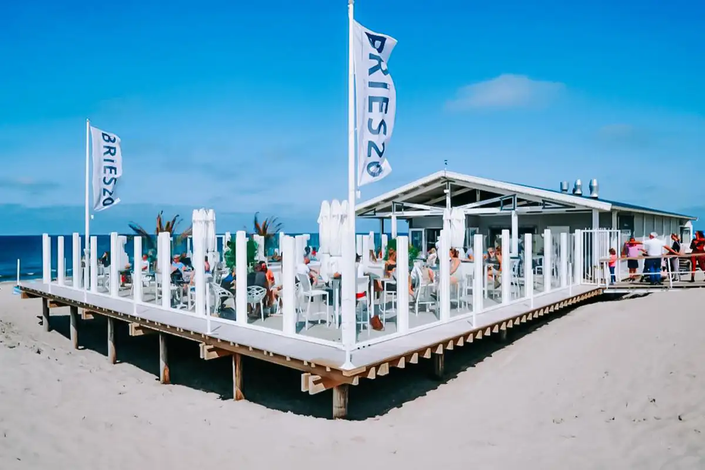
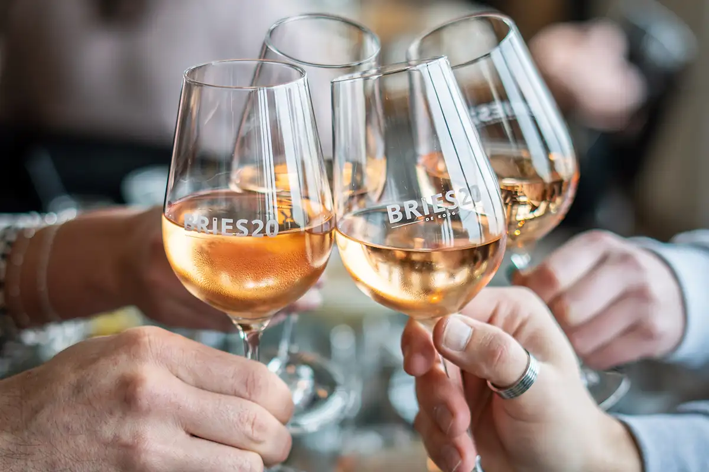
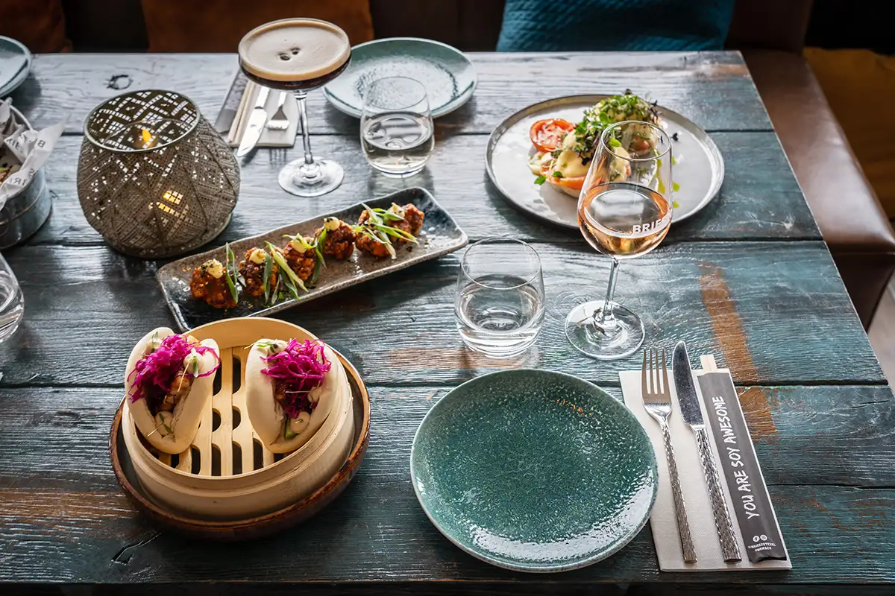
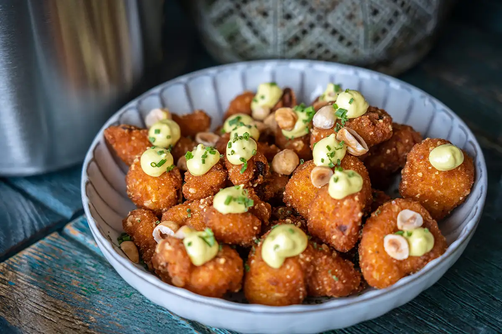
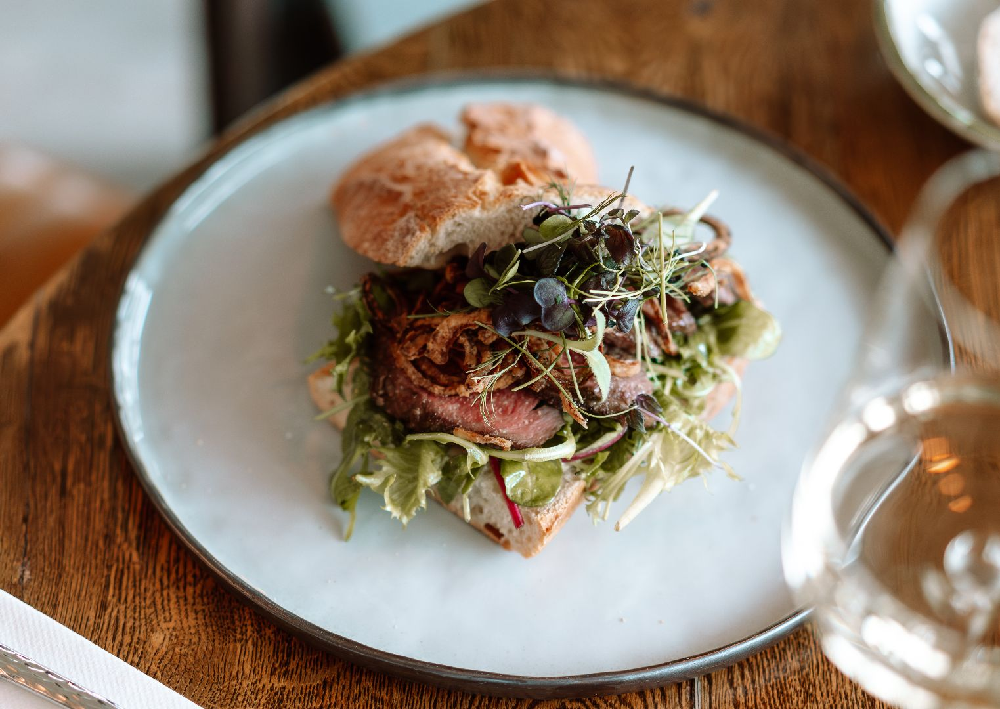
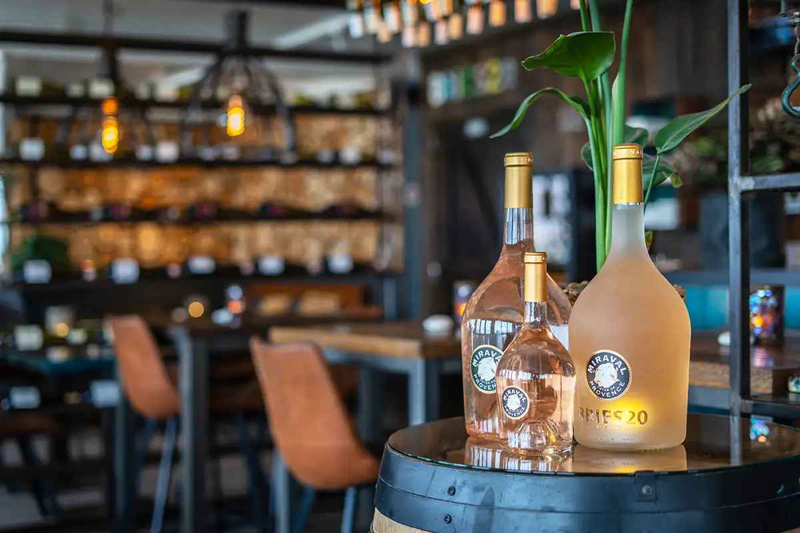
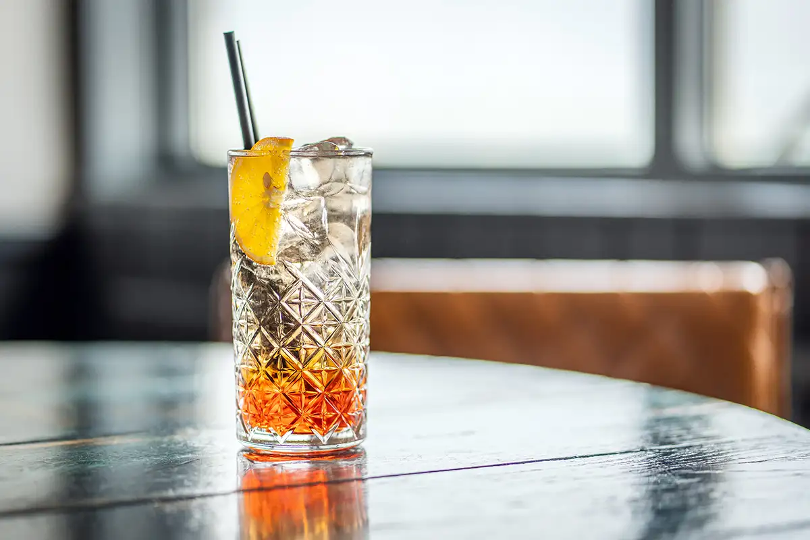
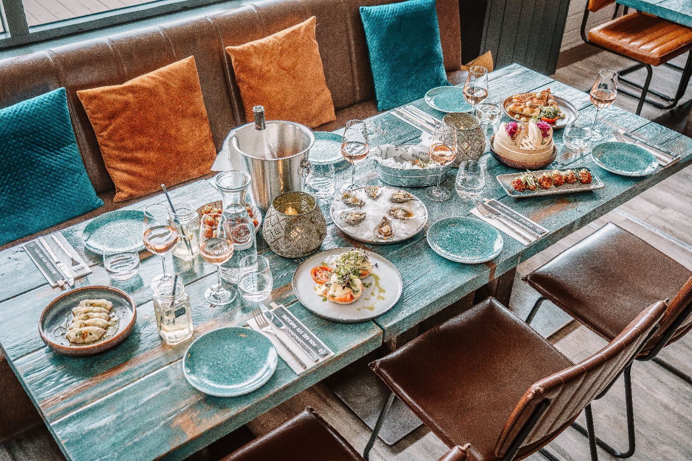

Aan het strand van De Koog, Texel
Bries20
Relax, proef, geniet.
Het hele jaar het ultieme strandgevoel: verfrissende drankjes, lunch, oesters en een grote keuze uit shared bites. Luxe, warm en relaxed.
Het beste plekje op het Texelse strand
Bij Bries20 in De Koog beleef je het hele jaar het ultieme strandgevoel. Met liefde en passie hebben wij een echte hotspot aan het Texelse strand gecreëerd. Dat zie je, dat proef je, dat voel je.
Wees welkom en geniet van een luxe, warme en relaxte beach vibe. Onze medewerkers staan vanaf 10:00 uur voor je klaar. Kom langs en ervaar hoe elke dag voelt als een vakantie!








Een horecafamilie aan zee
De Pandelaren zijn een echte horecafamilie uit Laren, met een rijke horecahistorie. “Na vijfentwintig jaar op vakantie naar Texel, kun je wel zeggen dat de familie op Texel is opgegroeid”, aldus Cor Pandelaar. Sinds 2018 zijn zij met trots de eigenaren van Bries20 in De Koog.
Roos en Huub
Roos en Huub leerden elkaar kennen in het restaurant van haar ouders in Laren. Allebei werden ze verliefd op het horecavak, en ze waagden de stap om samen met Roos’ ouders naar Texel te verhuizen. “Bries20 voelde meteen als onze zaak.” Sinds 1 april 2022 heeft Cor het stokje overgedragen aan dochter Roos en vriend Huub, die chef is van de keuken.
“Wij vinden het belangrijk dat we net ietsje anders zijn dan anderen en veranderen daarom ook meermaals per jaar ons menu.”
Bries20 is een bedrijf van deze tijd: een hippe, trendy inrichting en gerechten met een twist. Leuke, kleine en vlotte hapjes, zodat je verschillende gerechten kunt proeven. Enorm populair.
Groepen, trouwerijen & catering
Wil je meer informatie over onze mogelijkheden voor groepen, trouwerijen, bedrijfsfeestjes of catering, of heb je een andere vraag? Neem vrijblijvend contact met ons op, of kom gezellig bij ons langs.
Mail info@bries20.nlAltijd al aan zee willen werken?
Ben jij op zoek naar een toffe en uitdagende baan waarbij je op het strand werkt en tegelijk geniet van het mooie weer? Wij zoeken enthousiaste medewerkers die ons fijne team part- of fulltime komen versterken, in de keuken of in de bediening.
Stuur je cv naar info@bries20.nl, dan mailen wij je spoedig terug. Vragen? Neem gerust contact met ons op.
- Afwas
- Bediening
- Barman of -vrouw
- Chef / sous-chef
Openingstijden
In het winterseizoen dagelijks open
| Maandag | 10:00 – 17:30 |
|---|---|
| Dinsdag | 10:00 – 17:30 |
| Woensdag | 10:00 – 17:30 |
| Donderdag | 10:00 – 17:30 |
| Vrijdag | 10:00 – 17:30 |
| Zaterdag | 10:00 – 17:30 |
| Zondag | 10:00 – 17:30 |
Reserveren?
Wij hanteren een vrije inloop, zodat iedereen de kans krijgt om bij ons te genieten. We zien jullie graag aanwaaien, de doorloop gaat voorspoedig. Reserveren voor lunch of borrel kan via 06 17 80 31 63.
Jullie viervoeter is welkom bij ons!